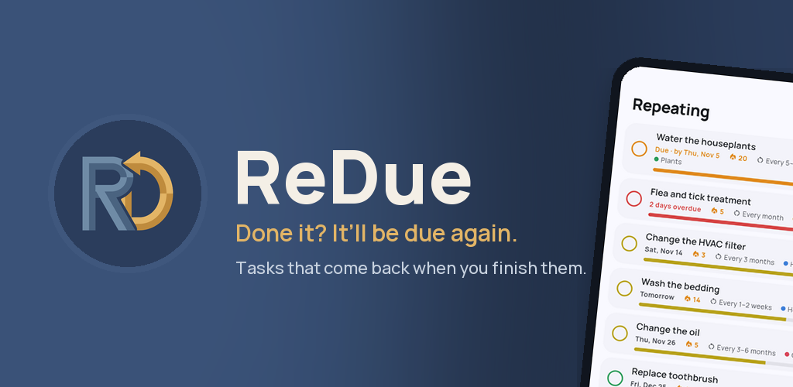
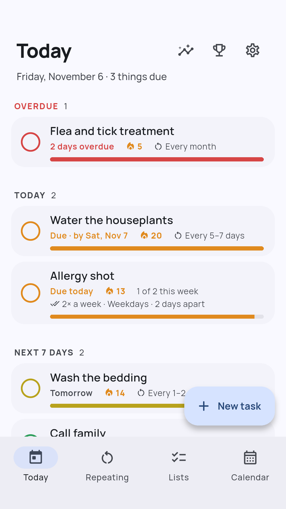
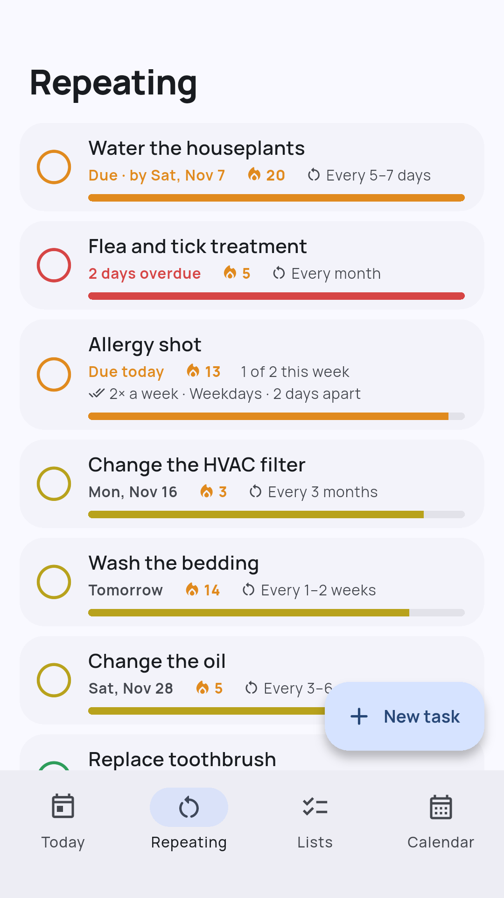
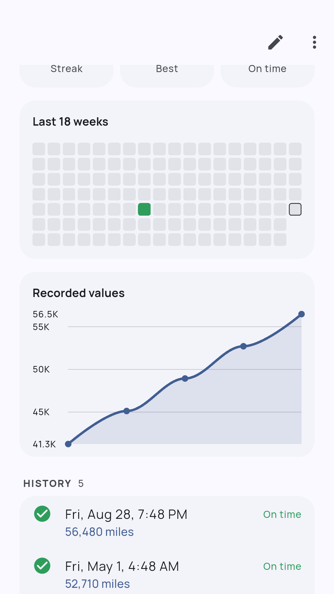
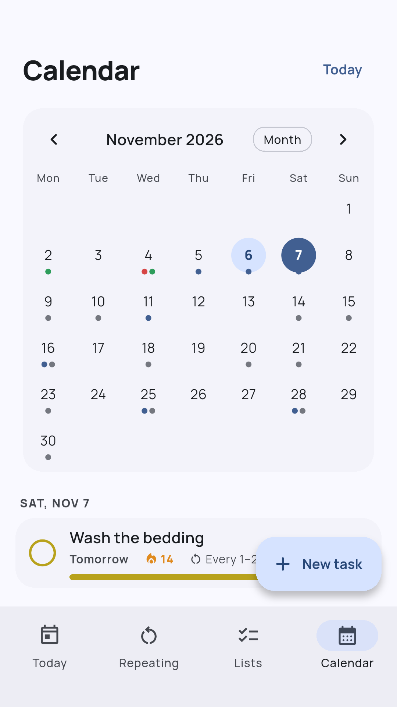
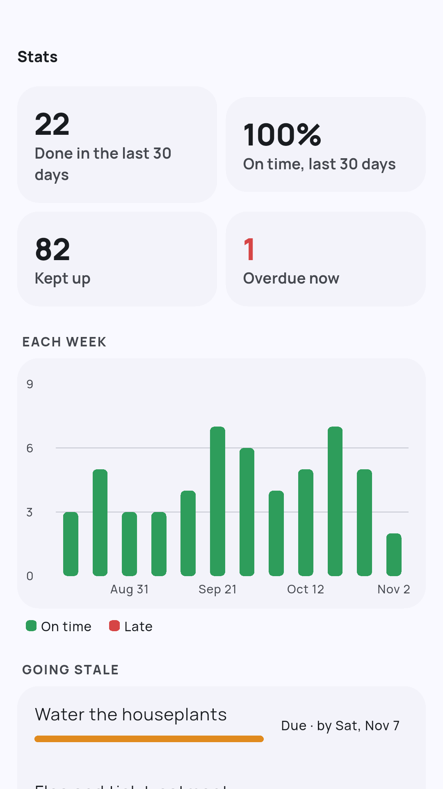
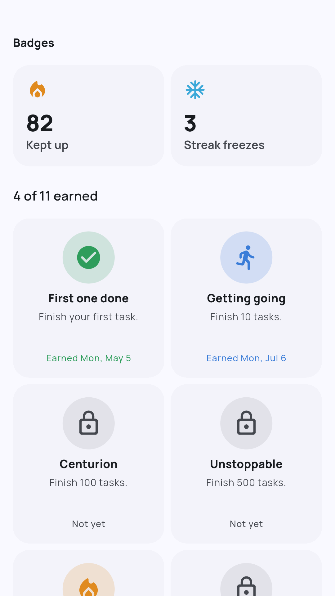
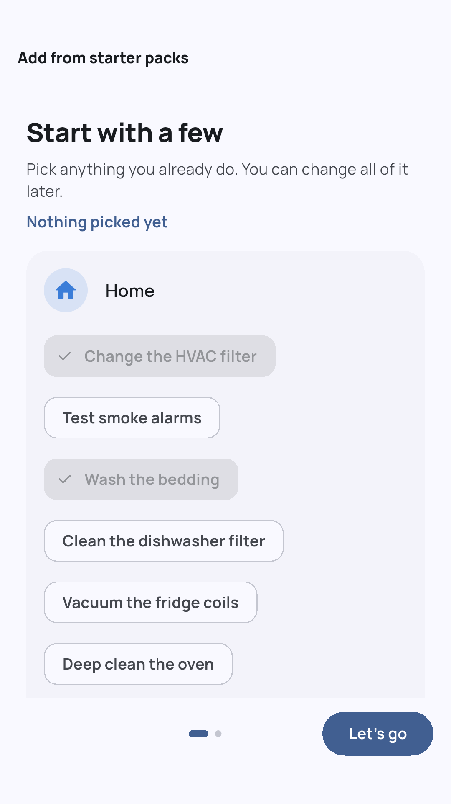

ReDue

ReDue is a task app for the things that come around again: changing a filter, watering the plants, an oil change, the flea treatment. It counts the next due date from when you actually did it, not from a fixed calendar.
Change the furnace filter every 3 months. You get to it two weeks late? The next one is due 3 months from the day you really changed it, so you never have to remember when the last time was.







What it does
- Repeat after you finish, every so many hours, days, weeks or months, or a flexible range like "every 1–2 weeks"
- Calendar repeats too (every Tuesday, the 1st of the month, every year), plus one-off tasks and simple lists without dates
- A number of times a day, week or month, like "2× a week, on weekdays, 2 days apart", with "1 of 2 this week" on the task and a nudge on the last day
- A freshness bar on each repeating task, green to red, so you can see at a glance what's slipping
- Reminders and an optional morning summary, with Done, Later and Tomorrow right on the notification
- Streaks and badges for keeping up, with freezes that save a streak when life gets busy, and a vacation mode
- Starter packs for home, car, health, plants, pets and self-care, so you're set up in under a minute
- Notes, a number or a cost, and a photo on each completion, so a task's history tells its story (mileage at each oil change, what the vet said)
- Smart suggestions when the way you really do a task doesn't match its interval
- Keep your tasks, history and photos the same on all your devices with optional sync (ReDue Pro)
- Back up everything to a file, and export your history to a spreadsheet
- In 11 languages: English, Spanish, Portuguese, French, German, Italian, Russian, Japanese, Korean, Chinese and Turkish
Free, no ads
ReDue is free with no ads and no limit on tasks. An optional one-time ReDue Pro purchase adds sync across your devices, a home-screen widget, stats and charts, and more color themes and app icons. Shared household tasks are planned.
Your data, your choice
There's no account to make. Your tasks live on your device unless you turn on sync, which is optional and uses Google sign-in. You can delete that account and its synced data at any time. See the privacy policy.
Support
Questions, feedback or bug reports: baylandblue@gmail.com